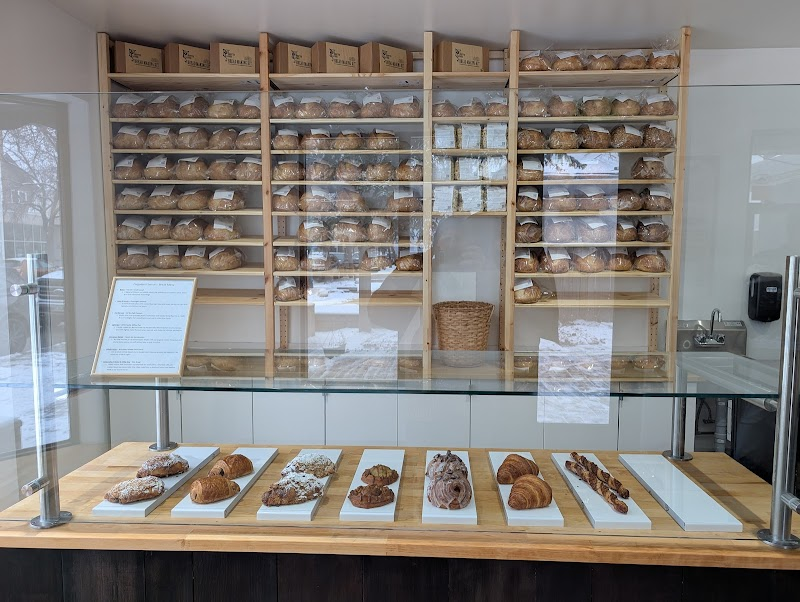

Forgotten Flavours: the wild-yeast bakery near the Corydon Airbnb

A few doors down from the strip's restaurant row, at 858 Corydon Ave, is a bakery worth building a morning around. Forgotten Flavours works with wild yeast rather than commercial yeast, and it's an easy, walkable stop from the Corydon/Crescentwood Airbnb.
What "wild yeast" actually means
Instead of packaged yeast, Forgotten Flavours ferments its dough using naturally occurring wild yeast, with loaves going through a long fermentation (commonly cited at around 48 hours) before baking. The bakery has said it may be the only bakery in Canada working this way at scale. The result is the kind of dense, chewy, deeply flavoured sourdough that takes real time to make, not a shortcut version of it.
What's in the case
Beyond the wild-yeast loaves, the shop carries pastries and, at times, fresh pasta and other baked goods made with the same starter. The Corydon location took over the storefront previously occupied by Pennyloaf Bakery, so the shelves of bread are a familiar sight if you've walked this block before.
How it fits your stay
It's an easy add-on to a walk down Corydon: pick up a loaf or a pastry on your way back to the Airbnb, or grab something the morning you check out rather than relying on whatever's in the kitchen. Because the bakery bakes in batches and doesn't run seven days a week, it's worth checking their website or Instagram for that day's hours and what's currently in stock before you go, rather than assuming it's open.
Good to know: This is a bakery, not a sit-down café, plan on takeaway rather than a table. If you want a full dessert crawl instead, see our sweet tooth crawl guide.